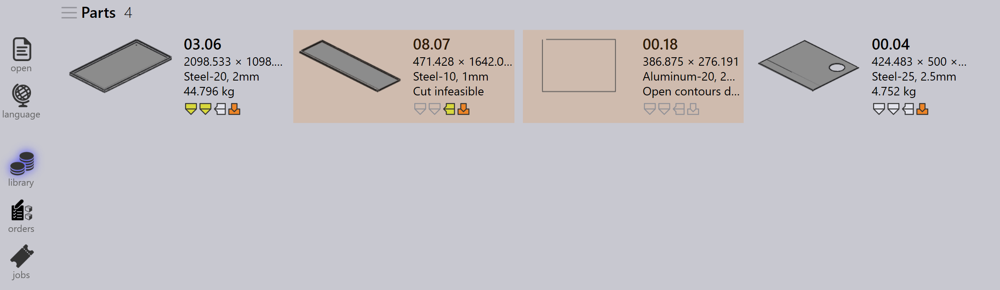

Workflow
TruSmartCAM adalah Manufacturing Execution System yang mengelola dan mengoptimalkan proses manufaktur lembaran logam. Workflow dalam TruSmartCAM terdiri dari serangkaian langkah yang Anda ikuti untuk menyelesaikan tugas atau proses tertentu. Anda dapat menyesuaikan workflow agar sesuai dengan proses manufaktur yang berbeda dan menyesuaikannya dengan kebutuhan spesifik Anda. Workflow dalam TruSmartCAM biasanya mencakup langkah-langkah berikut:
1. Konfigurasi sistem
Konfigurasi TruSmartCAM agar sesuai dengan lingkungan manufaktur Anda. Langkah dasar ini mencakup mendefinisikan mesin dengan kemampuan dan parameternya, menambahkan material yang tersedia dan rentang ketebalan, mengonfigurasi library tooling dengan punch dan die, membuat setup sheet untuk konfigurasi mesin yang berbeda, dan mengelola akun pengguna dengan izin yang sesuai. Sistem yang dikonfigurasi dengan baik memastikan pemrosesan yang akurat dan mencegah kesalahan di tahap selanjutnya. Setup ini biasanya dilakukan sekali selama deployment awal, dengan pembaruan berkala seiring pabrik Anda berkembang.
Untuk informasi lebih lanjut, lihat Add/Remove machine, Material, Sheets, Setup tooling, dan Configure users.

2. Tambahkan part ke library
Impor part CAD 2D atau 3D ke Part Library menggunakan format yang didukung seperti file DXF, DWG, atau STEP. Selama impor, TruSmartCAM secara otomatis menganalisis geometri part, memvalidasi kemampuan manufaktur, menetapkan teknologi lembaran logam yang diperlukan (laser, punch, atau kombinasi), dan menghasilkan thumbnail preview. Part yang diimpor muncul sebagai tile dalam tampilan library, di mana ikon berkode warna menunjukkan status part, jenis teknologi, persyaratan material, dan masalah yang terdeteksi. Sistem visual ini memungkinkan penilaian cepat kesiapan part dengan sekilas pandang.
Untuk informasi lebih lanjut, lihat Library.

3. Verifikasi part dan tooling
Tinjau setiap part yang diimpor untuk potensi masalah produksi. Verifikasi bahwa geometri part valid dan dapat diproduksi, penugasan tooling benar dan tersedia, pilihan material dan ketebalan sesuai dengan inventaris, dan urutan bending didefinisikan dengan benar untuk part yang dibentuk. Jika masalah terdeteksi, buka part dalam TecZone untuk memodifikasi geometri, menetapkan ulang atau mengoptimalkan tooling, menyesuaikan parameter pemrosesan, atau memperbaiki spesifikasi material. Menyelesaikan masalah pada tahap ini mencegah keterlambatan produksi dan mengurangi scrap selama manufaktur.
Untuk informasi lebih lanjut, lihat Part state dan Tooling status.

4. Organisasi part ke dalam job
Kelompokkan part yang divalidasi ke dalam job berdasarkan persyaratan produksi. Job mewakili unit produksi logis yang mungkin mencakup part dari satu order pelanggan, part yang berbagi material dan ketebalan yang sama, part dengan tenggat pengiriman yang serupa, atau kombinasi berdasarkan strategi produksi Anda. Job menyediakan wadah untuk perencanaan, memungkinkan pemrosesan batch part terkait, memungkinkan utilisasi material yang efisien melalui nesting, dan menyederhanakan pelacakan dan pelaporan. Job dapat dibuat secara manual dengan memilih part, atau secara otomatis berdasarkan aturan dan filter yang telah ditentukan.
Untuk informasi lebih lanjut, lihat Jobs.

5. Rencanakan job ke mesin produksi
Setelah job dibuat, tetapkan ke mesin produksi yang sesuai. Pertimbangkan kemampuan mesin termasuk teknologi yang didukung (laser, punch, turret), kapasitas material dan ketebalan, tooling yang tersedia, dan beban kerja saat ini. Jika terdapat beberapa mesin yang sesuai, pilih berdasarkan prioritas produksi, ketersediaan mesin, persyaratan setup, atau optimasi biaya. Penugasan dapat dilakukan secara manual untuk fleksibilitas atau otomatis berdasarkan aturan yang telah dikonfigurasi dan algoritma penjadwalan mesin.
Untuk informasi lebih lanjut, lihat Plan job.

6. Release NC untuk job
Pada tahap ini, cut layout dihasilkan. Anda masih dapat mengedit layout dan menambahkan teknologi pemotongan ke layout menggunakan TecZone. Setelah itu, ekspor output NC dan transfer ke controller mesin atau lokasi jaringan yang ditentukan. Job kemudian dikunci untuk mencegah modifikasi lebih lanjut, dan statusnya diperbarui menjadi "Released" untuk pelacakan produksi.
Untuk informasi lebih lanjut, lihat Send/Recall NC.

7. Selesaikan produksi dan finalisasi job
Eksekusi job yang dirilis pada mesin yang ditugaskan. Selama produksi, operator mesin mengikuti program NC, memverifikasi kualitas part selama pemotongan, mengelola pemuatan dan pembongkaran material, dan mengatasi alarm mesin atau masalah. Setelah produksi selesai, tandai part individual atau seluruh job sebagai selesai dalam TruSmartCAM. Langkah terakhir ini memperbarui catatan inventaris, mencatat waktu produksi aktual dan penggunaan material, mengarsipkan data job untuk pelaporan dan analisis, dan menyelesaikan siklus workflow.
Untuk informasi lebih lanjut, lihat Mark complete.